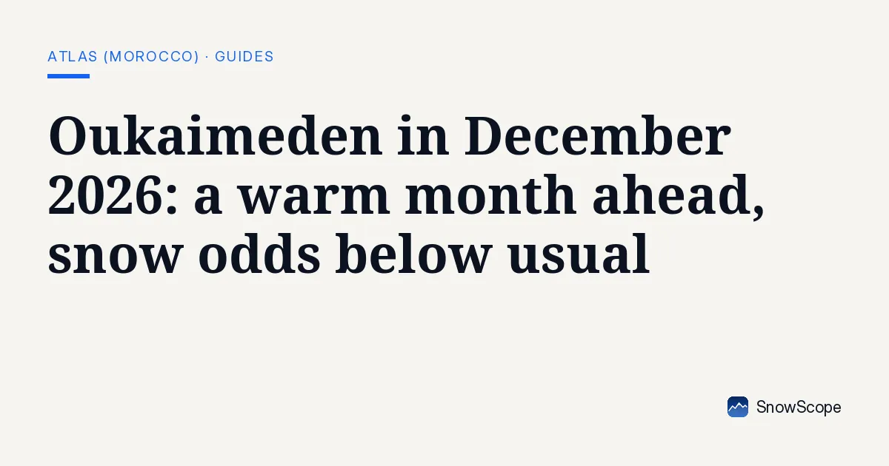
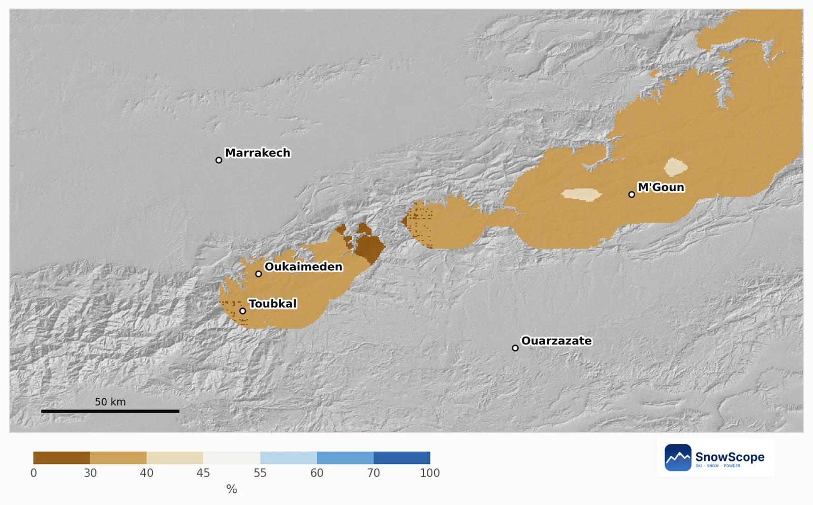
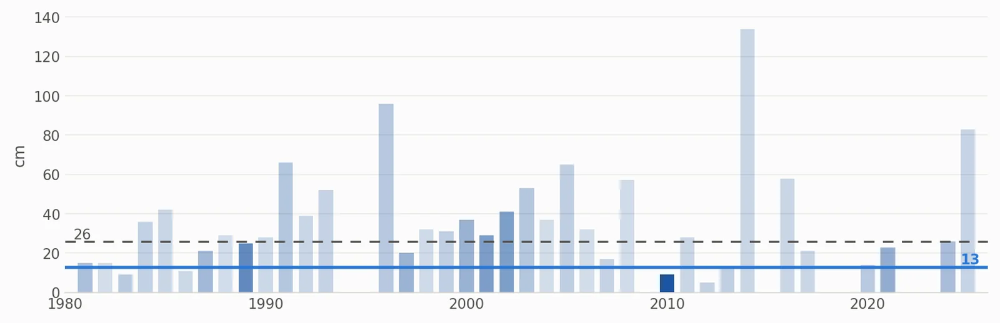

Oukaimeden in December 2026: a warm month ahead, snow odds below usual
Oukaimeden sits bare on 10 November. The 6 cm that fell at the top last week has gone, and the next week brings no fresh snow. The seasonal forecast for December is decidedly warm across the High Atlas, and that shifts the snow odds sharply downward.
See the live snow forecast for Oukaimeden in the SnowScope appSnow depth, powder alerts and the 3D map, free.

No snow on the ground right now
The map shows 0 cm everywhere: base at 2600 m, mid-mountain at 2930 m, and the summit at 3260 m. Only 1 % of the terrain within 60 km shows white. We display the bare mountain instead—Toubkal's high ridges where snow first sticks when winter arrives—so you can see where to watch for the season's opening.
The past week brought 1 cm at mid-height and 6 cm at the top, but neither stayed. The next seven days show no snow forecast at any height.
December outlook: warmer than usual, snow scarcer
The SnowScope map compares the High Atlas mountains around Oukaimeden with their own history. Across the region, 95 % of the area shows a leaner December snow signal—fewer places than usual will catch significant accumulation. None of the 55 mountain grid cells point to a snowier outlook.
The chance of new snow above the December average ranges from 29 % to 43 % across the range. That means roughly one chance in three, at best, that this month will be wetter than past Decembers.

What December usually brings, and what this year looks like
In a typical December, Oukaimeden's high slopes around 3200 m receive 41 cm of new snow and hold 26 cm on the ground by the last day of the month. The outlook for this year is 37 cm of new snow but only 13 cm remaining on 31 December. The range of uncertainty is wide: between 0 and 29 cm is the most likely band. The chance that snow will be deeper than usual by month-end stands at just 26 %.
Warmth is the driver. The past Decembers this forecast most closely resembles are 2010, 2023 and 1989—years when Atlantic storms were sparse and December air held more heat than cold. In such months, what snow does fall melts quickly under strong winter sun on bare rock, especially at lower elevations.


The European seasonal system: near-certain warmth, mixed signals on rain
The 51 runs of Europe's main seasonal forecast are strikingly agreed on one point. Ninety-four percent of them predict a December warmer than the 1993-2016 average, with an average warming of 2.2 °C across the High Atlas. Such broad consensus on warmth rarely occurs.
Rainfall signals split the forecasts. Fifty-one percent predict a wetter month than usual; 49 % predict a drier one. On average, the forecast adds 11 % to a typical December's 33 mm—a small surplus. Yet in these mountains, temperature matters more than total rainfall. Snow responds tightly to what falls (correlation 0.91 with precipitation) but loses ground to warmth. A few degrees of extra heat turns falling precipitation into rain on the lower slopes and hastens melt on the high ones.

When to watch, and when snow persists longest
An Atlantic storm can still reverse the monthly picture within days, so the December outlook is a shift in the odds, not a fixed forecast. December storms are rare in the Atlas, but not impossible. When one arrives—with cold air aloft and organised precipitation—Oukaimeden's highest slopes turn white quickly.
If snow does fall, the top (above 3200 m) keeps it longest because the air stays colder at altitude and the sun angle is lower. The mid-mountain slopes and base lose accumulation within days once a warm spell returns. This is why early-season snow at Oukaimeden is a window, not a base.
Tips for skiers
- Check the 7-day storm forecast before planning an early-December visit. A single Atlantic system can bring snow to the high slopes even in a warm month.
- If snow arrives, ski or hike the highest ground (above 3200 m) within 48 hours of the storm; lower elevations will be bare within days.
- Bring layers: December in the Atlas swings between warm afternoons and cold nights, and the sunny slopes can feel spring-like even at 3000 m.
- For hiking above 3000 m, carry rock shoes or crampons; expect mostly bare terrain in December 2026 and sudden ice where meltwater refreezes at night.
- Before going off-piste after a rare December snowfall, check the official avalanche bulletin for the Atlas region.
About these numbers
Resort snow depths are the deepest snow on the resort's upper slopes on the date shown; they are estimates for an area, not a measurement at one point. Forecasts can change. Always read the official avalanche bulletin before going off-piste.
Cite this report
For research, teaching or the press: the numbers and charts are free to reuse under CC BY 4.0 with this citation.
SnowScope (2026), Oukaimeden in December 2026: a warm month ahead, snow odds below usual, https://snowscope.app/blog/en/2026/11/oukaimeden-december-2026-snow-outlook.html, accessed 2026-11-10
SnowScope (Atlas Labs). (2026, November 10). Oukaimeden in December 2026: a warm month ahead, snow odds below usual. SnowScope snow reports. https://snowscope.app/blog/en/2026/11/oukaimeden-december-2026-snow-outlook.html
BibTeX
@misc{snowscope2026oukaimedendecember2026sn,
author = {{SnowScope (Atlas Labs)}},
title = {Oukaimeden in December 2026: a warm month ahead, snow odds below usual},
year = {2026},
month = nov,
howpublished = {\url{https://snowscope.app/blog/en/2026/11/oukaimeden-december-2026-snow-outlook.html}},
note = {Published 2026-11-10 09:30 UTC; accessed 2026-11-10}
}· CC BY 4.0 · Methods, data and tools →
Follow Oukaimeden
Free: a message when fresh snow is coming, and the forecast every morning.
More snow reports

The Atlas has snow only above 3,000 m today: 60 km² on the highest ground, with 11 cm at most. No snow at the three ski resorts.

Snow retreats to the highest summits in the Atlas. The three ski resorts have no snow today; 40 km² of peaks stay white. More melt ahead.

About 65 mm on Toubkal by 12 November, but the 0 °C level stays near 4,000 m: rain at Oukaïmeden and in the valleys, snow only on the top.